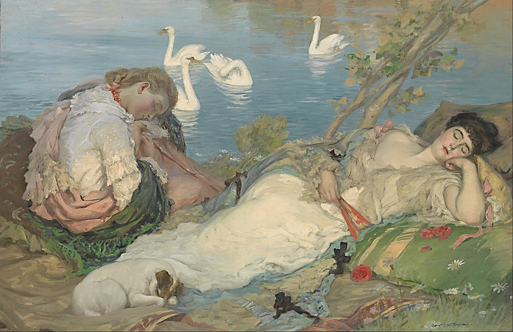

<head>
<meta charset="UTF-8" />
<meta name="keywords" content="drawing, painting" />
<meta name="description" content="drawings by Sunjy" />
<title>Sunjy</title>
<link rel="shortcut icon" type="image/x-icon" href="../../mImages/mCommon/favicon.ico" media="screen" />
<link rel="stylesheet" type="text/css" href="../../mCsses/mCommon/mCssA.css" />
<link rel="stylesheet" type="text/css" href="../../mCsses/mCommon/mCssB.css" />
<link rel="stylesheet" type="text/css" href="../../mCsses/mCommon/mCssC.css" />
<link rel="stylesheet" type="text/css" href="../../mCsses/mCommon/mCssD.css" />
<link rel="stylesheet" type="text/css" href="../../mCsses/mContent/mCssA.css" />
<link rel="stylesheet" type="text/css" href="../../mCsses/mContent/mCssB.css" />
<link rel="stylesheet" type="text/css" href="../../mCsses/mContent/mCssC.css" />
<link rel="stylesheet" type="text/css" href="../../mCsses/mContent/mCssD.css" />
</head>
<script type="text/javascript" src="../../mScripts/mContent/mContentAA.js" /></script>
<script type="text/javascript" src="../../mScripts/mContent/mContentAB.js" /></script>
<script type="text/javascript" src="../../mScripts/mContent/mContentAC.js" /></script>
<script type="text/javascript" src="../../mScripts/mContent/mContentAD.js" /></script>
<script type="text/javascript"></script> 
<script type="text/javascript">
document.write('<div class="mImgAbsolute"></div>');
/*
document.write('<p class="mFontSizeBColor" />From a white paper...</p>');
document.write('<table class="center"><tr><td>');
document.write('');
document.write('</td></tr></table>');
*/
</script>


<script type="text/javascript">
document.write('<p class="mFontSizeBColor" />Endormies</p>');
document.write('<p class="mFontSizeSColor" />“Endormies” by Rupert Bunny depicts two female figures relaxing and dreaming at the water’s edge. Endormie means sleepy is French and is descriptive of this scene. Bunny modeled the sleeping figure on his wife Jeanne Morel, who featured in many paintings during this period.<br><br>Jeanne is a French variation of Jean, and the meaning of the name is “God is gracious.” Her graceful and sensuous features graced many of his paintings.<br><br>In this painting, Bunny has included a rose, a traditional symbol of love, as well as the white swans, which are symbolic of grace and beauty. These are recurring themes in Bunny’s compositions and was inspired by French art motifs from before the Great War. Many artists also used the motif of a small dog to symbolize marital fidelity, which can be seen in this painting, sleeping at the feet of his mistress.<br></p>');
document.write('<table class="center" /><tr><td>');
document.write('<br>Jeanne is a French variation of Jean, and the meaning of the name is “God is gracious.” Her graceful and sensuous features graced many of his paintings.<br><br>In this painting, Bunny has included a rose, a traditional symbol of love, as well as the white swans, which are symbolic of grace and beauty. These are recurring themes in Bunny’s compositions and was inspired by French art motifs from before the Great War. Many artists also used the motif of a small dog to symbolize marital fidelity, which can be seen in this painting, sleeping at the feet of his mistress.<br>" />');
document.write('</td></tr></table>');
</script>


